The Form API Workflow

Ricardo Sanz
Drupal Developer & DevOps
drupal.org/u/tunic
sanzante @ Twitter
Walktrough
- The Form API
- Simplified workflow
- Form API stages
- Cache / Persistence
- AJAX requests
- Complete workflow
- Key points
Form API: What is
- An abstraction of HTML forms
- Handles submit, persistence, altering and rendering
- Security!
- Handles AJAX in forms
- Allows alterations
- Safety!
- Build custom forms
Form API: How?
- "form_builder" service handles forms
- Many classes involved: FormBuilder, FormValidator, FormBase, etc.
- A class that implements a form (extends from FormBase)
- A form array (usually $form)
- A form state (usualy $form_state)
The Form Array
- PHP array
- Structure and behavior
- Not exactly a Render Array
- Available during all Form API stages
- It is changed during stages
The Form State
- Usually a FormState instance
- At least a FormStateInterface instance
- Contains state of the form
- Inputs
- Errors
- Flags
- Available during all Form API stages
- It is changed during stages
Notable values
- form_id: the form (like a class)
- form_build_id: the specific form build (like an instance)
- Token: ensures form was previously requested
User requests a form
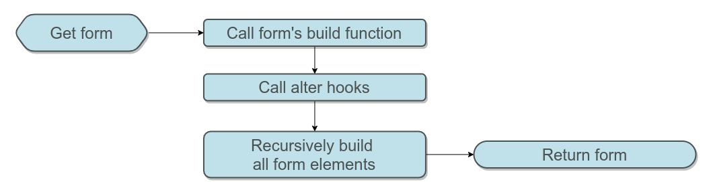
First HTTP request
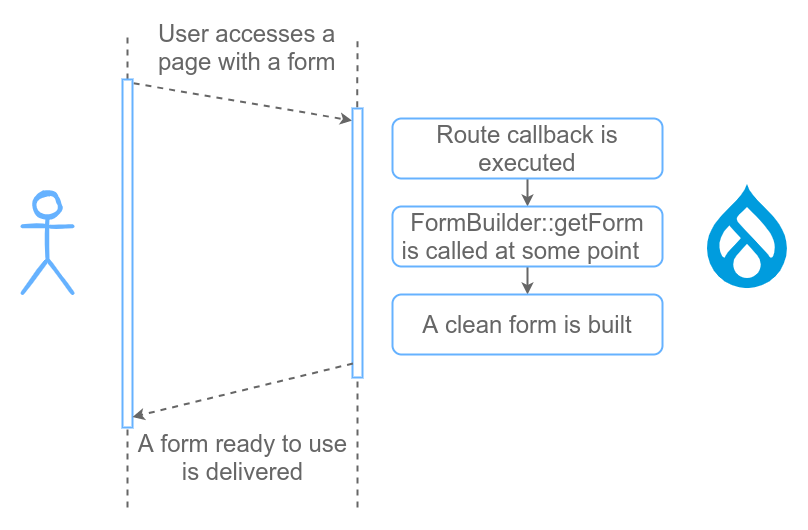
User submits a form
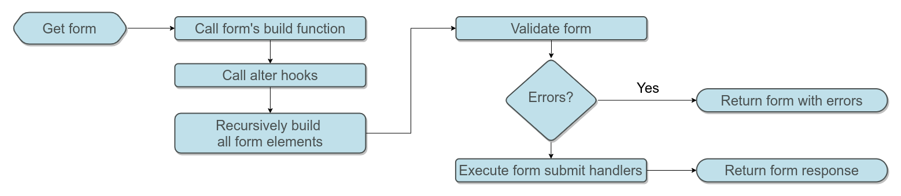
Second HTTP request
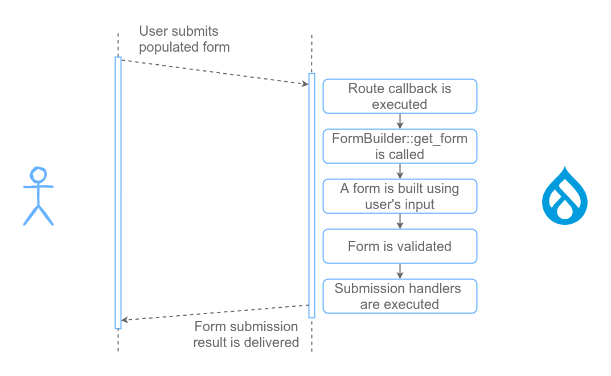
User submits a form that is rebuilt
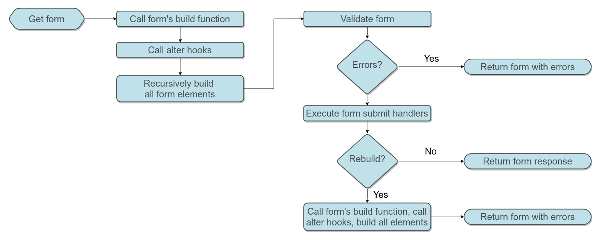
Rebuilding loop
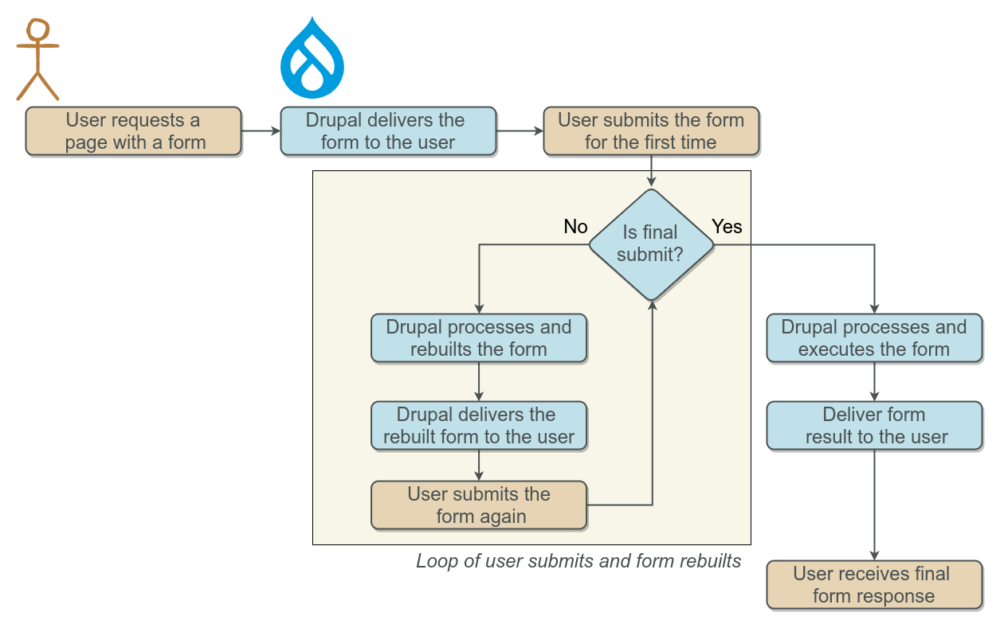
Rebuilding loop
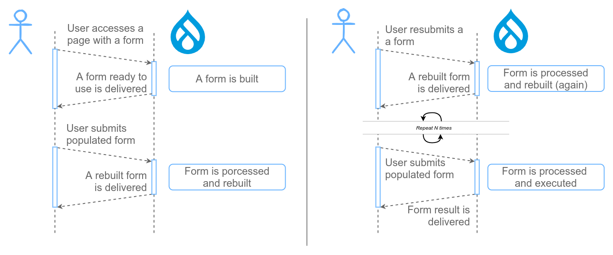
Example of form rebuilding
On each request new form element appears
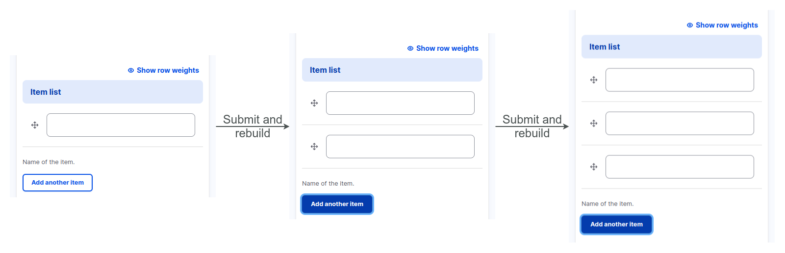
Form responses
Response can be:
- Markup
- Redirection
- A rebuilt form
- A form with errors
- Whatever submits decide
Not at all!
What else?
- How Drupal handles security?
- How Drupal keeps track of data between requests?
- How is AJAX handled?
- Validation in detail
- Submission in detail
- Rebuilding in detail
- Workflow details
Form API stages
Retrieve and prepare
(1/5)
1A - Retrieve
- Form build function
- Dynamic elems depends on $form_state
- On rebuild: form is built again here
1B - Prepare
- Build id added
- Security token added (registered users)
- Alter hooks!
- First place to customize an existing form
Retrieve and prepare
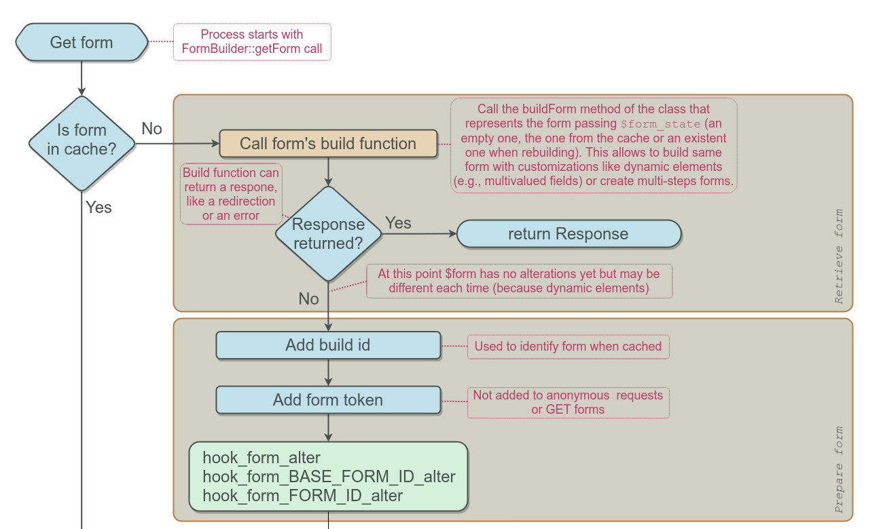
Retrieve and prepare: output
- A built form
- All dynamics elements in place
- All altertions in place
- This is the unprocessed form
Form API stages
Recursive building
(2/5)
Recursive building
- Goals
- Get a renderable array
- Collect input values (defaults or sent by user)
- Detect triggering button (if any)
- Detect which validate handler to run
- Last chance to modify/tweak the form
- Process callback
- After build callback
- Not standard alters!
Recursive building
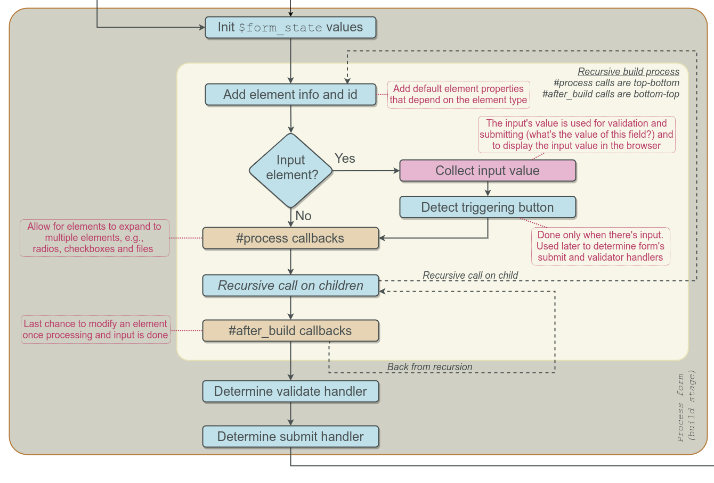
Process callbacks
- Called top-bottom
- Allow for elements to expand to multiple elements
- More than 100 uses in core
- You may need, specially for custom elems
- Example: adding JS conditionally on field value
After build callbacks
- Called bottom-to-top
- Less than 10 uses in core
- Unlikely you need it
- Example: removing elements after file disk check
Handler detection
Validation
- Button pressed
if not then - Form-level validate
Submit
- Button pressed
if not then - Form-level submit
Form API stages
Validation
(3/5)
Validation
Form is checked (security and valid values)
- Check token (prevents CSRF)
- Validate all elems bottom-to-top
- Call elem's validate, if any
- Validate form (button or form handler)
- Can change $form or $form_state for next rebuild
- Can enable rebuilding
Validation
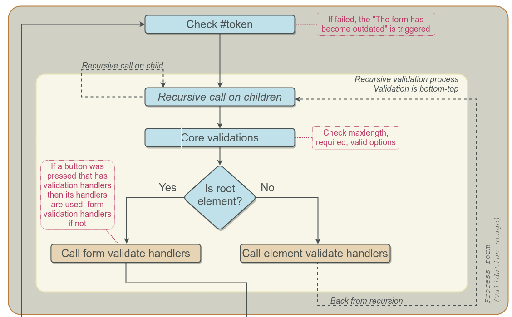
Validation errors
- Errors are added to rendered form
- Submit handlers are skipped
- Rebuilding is forbidden
Form API stages
Submit
(4/5)
Submit
Form is executed, running any needed actions
- Run submit handlers (button or form)
- Return response, if any
- Usually a redirect or markup is delivered
- Can change $form or $form_state for next rebuild
- Can enable rebuilding
Submit
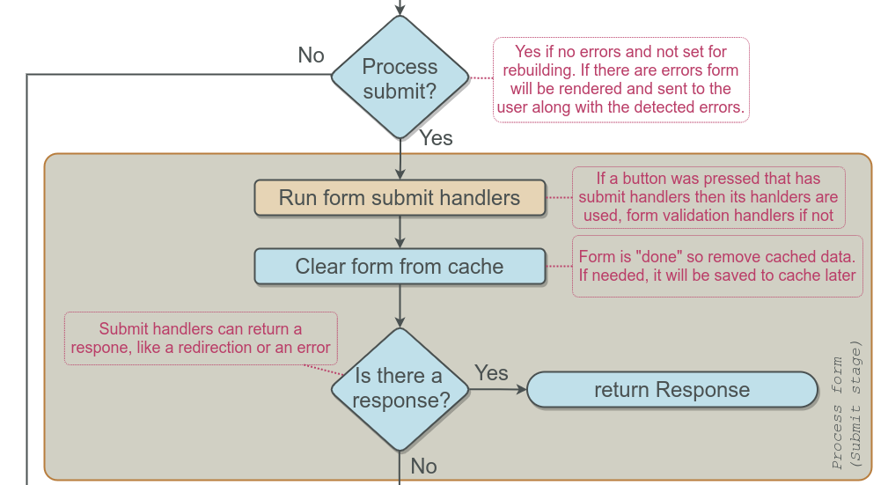
Form API stages
Rebuild
(5/5)
Rebuild
Rebuilding allows for complex forms
- Multi-step forms
- Dynamic elements (adding, removing, etc)
- AJAX calls that modifies form
- Runs building steps (retrieve, prepare and actual building)
- Changes in $form and $form_state allow form changes when rebuilt
Rebuild
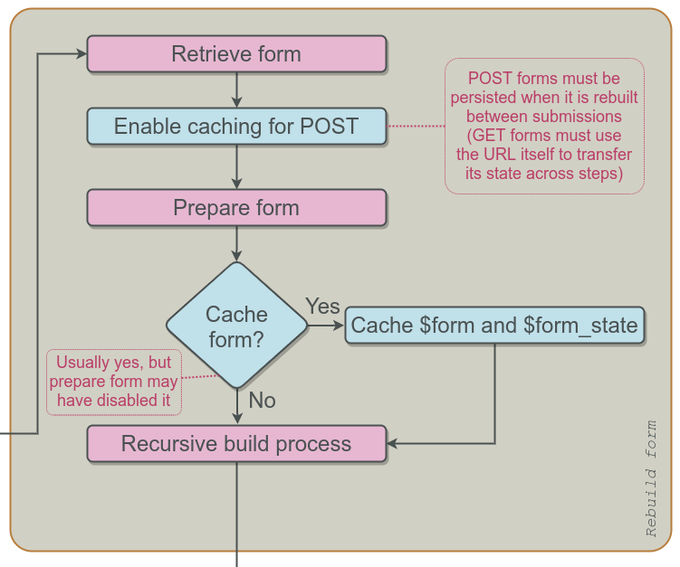
Cache / Persistance
Cache / Persistance
- Named "cache" but it should be persistance
- Allows for AJAX, mutistep and dynamic elements
- Usually Drupal takes care of it (auto-enabled)
- You may need to deal with it in special cases
Cache / Persistance: What?
- $form and $form_state are saved
- $form_state only given set of properties (see FormState::getCacheableArray)
- Use FormState's functions to CRUD data that will be cached/persisted
- get
- set
- has
AJAX requests
- They follow the same workflow
- They return what #ajax_callback returns
- They need cache/persistence (auto-enabled)
- They can also return one or more AJAX commands
AJAX requests: How To
- Element triggers an AJAX request
- Form is build, validated and executed
- During submit, some values are changed and rebuild enabled
- During rebuild, those changed values make form get a change (e.g.: more or less elements)
- #ajax_callback returns changed part of the form, the form or AJAX commands
- JS layer takes reponse and processes it (e.g: inserts markup into the HMTL)
AJAX requests: Don't
- Don't change $form during #ajax_callback
- #ajax_callback is not a submit, it is a result gatherer!
- Any change should be done during rebuilding
Simplifications
Not the whole picture
- Batch and programmed forms are not covered
- Details
- How HTML id are handled
- Some edge cases
- Security details
- More details
Key points
- Form's build function and alters for big changes
- Process and after builds callbacks for adjustments and tweaks
- Use the rebuilding loop for dynamic forms
- Use FormSate to store your own variables
- Use #ajax_callback to return response, not to change the form
- Check Drupal Examples module!